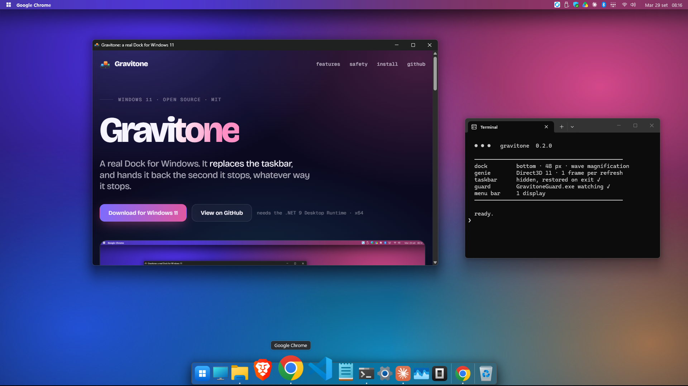
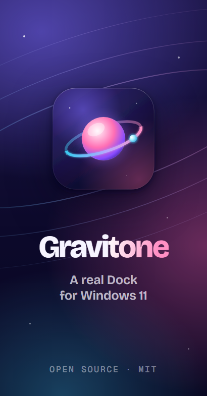
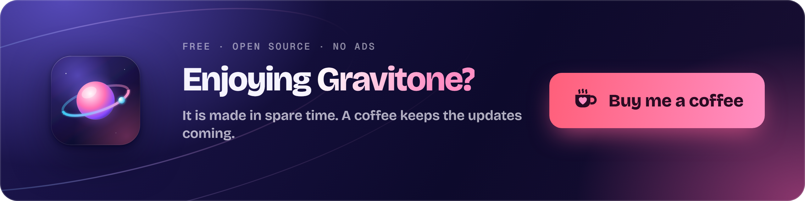

A real Dock for Windows. It replaces the taskbar, and hands it back the second it stops, whatever way it stops.

Minimize or restore from the Dock and the real window is bent through a funnel into its icon. It is drawn on the GPU, one frame per refresh of your monitor.
Icons swell under the pointer and the one you are aiming at stays put. Labels, running dots, a bounce for launches and for apps that want attention.
The plate is a separate window with the Windows 11 system backdrop and antialiased rounded corners. Not a tinted rectangle.
Registered as an app bar: maximized windows stop above it, the Windows taskbar is switched off while it runs.
Active app, your tray icons with working clicks and menus, Wi-Fi, volume, battery, clock. One per monitor.
Drag to reorder, drag out to remove in a puff of smoke, drop a program or folder to pin it. Folders become stacks.
Pick the monitor, or push the pointer against another one's edge and the Dock follows. Sleep, lock and monitor changes handled.
About 0.15% of one CPU core when idle. Open source, MIT, no telemetry, no network access.
Replacing the taskbar is only acceptable if you can never be left without one. So that is the first thing Gravitone is built around.
Ctrl + Alt + Shift + B toggles it. Gravitone.exe --restore-taskbar is the emergency switch.The installer puts Gravitone in your account, fetches the .NET 9 runtime from Microsoft if it is missing, and asks whether to start with Windows. Uninstalling gives the taskbar back before anything is deleted.
Windows 11 x64 · English and Italian · not code-signed yet, SmartScreen may warn · SHA-256 sums and build provenance on every release

No ads, no tracking, no paid tier. If Gravitone made your Windows a little nicer, a coffee keeps the updates coming.
